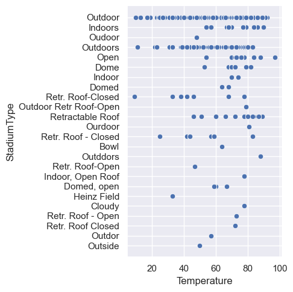
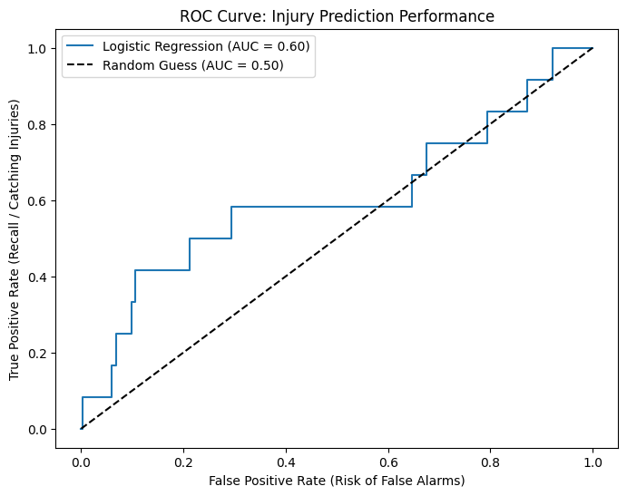
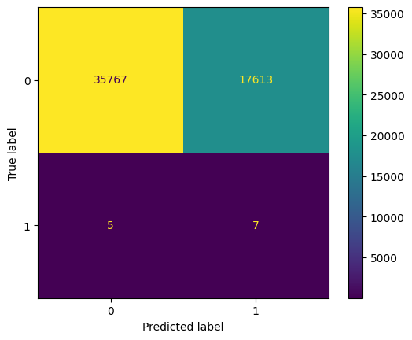
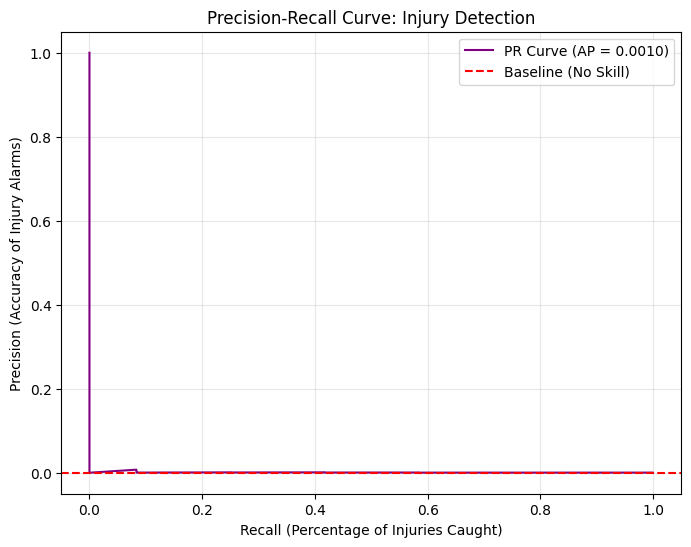

A per-play injury risk signal — and an honest account of its limits
Can machine learning predict the likelihood of a lower-extremity injury during an NFL play using player movement, playing surface, weather, stadium conditions, player position, and other game-related variables?
Lower-extremity injuries decide players' availability, careers, and long-term health, and the people they affect bear all the downside of both a missed injury and an unnecessary benching. Injuries also cost NFL teams over $500 million in 2019 alone (Phillips).
The underlying dataset was assembled specifically to examine "the effects that playing on synthetic turf versus natural turf can have on player movements and the factors that may contribute to lower extremity injuries," so the surface question sits at the centre of the work.
We delivered the model as the Lower-Limb Risk Lab, a live Streamlit dashboard that runs the whole pipeline on cold start and presents a filterable risk board, a diagnostics tab, and a per-player explorer.
Who this is for
- Athletic trainers and team medical staff — the intended users of a risk board like this one.
- Players — availability, careers, and long-term health are what is at stake.
- Coaches and performance staff — workload management, rotation, and rest decisions.
- League officials and stadium operators — the synthetic-versus-natural-turf question feeds directly into field surface policy and groundskeeping investment.
- Team front offices — the financial cost of injuries.
From an exploratory notebook to a deployed dashboard
The project changed shape three times. Each change came from finding a problem with the previous version rather than from adding features — the most useful work we did was auditing our own pipeline.
Exploration — understanding a three-file, 4 GB dataset
We profiled InjuryRecord, PlayList, and PlayerTrackData, verified their row counts and key structure, and mapped how a single PlayKey stitches all three together. This is where the turf, body-part, and severity distributions below came from, and where we learned that Temperature carries non-physical sentinel values for domes.
First model — and the first hard discovery
A logistic-regression notebook produced the headline numbers. It also surfaced the finding that reframed the whole project: 28 of the 105 injury records have a null PlayKey. The game is known, but the specific play was never noted, so those injuries can never be labeled by a key match. Our ceiling on positive examples was 77, not 105 — before any modeling choice we made.
Auditing our own notebook, then rewriting it
Reviewing the notebook, we found two real methodological defects: it called scaler.fit_transform(X) on the full dataset before splitting, leaking test-set distribution into training, and its split was not stratified, so how many injuries landed in the holdout was left to chance. It also divided speed differences by a fixed 0.1 s, assuming a 10 Hz interval that does not hold on our sampled file — producing accelerations up to 75.7 yd/s², roughly seven times what a human sprinter can generate. The rewrite, src/injury_model.py, fixes all three: the scaler moves inside a Pipeline, the split is stratified, and acceleration divides by actual elapsed time.
Delivery — the Lower-Limb Risk Lab
We shipped a Streamlit dashboard that ships no pre-trained artifact: on cold start it loads the committed data, runs the entire feature-engineering and training pipeline, and caches the result. It presents a downloadable low-risk player board, a diagnostics tab (ROC-AUC, recall, precision, ROC curve, confusion matrix, standardized coefficients, risk histogram), and a player explorer with risk-by-player-day traces.
dis_sum roughly 70× and inflates accel_max roughly 4×. The direction of every effect survives, but treat the notebook figures on this page as the finding and the dashboard as the delivery layer. Fixing this is the first item in Next Steps.
NFL Playing Surface Analytics — 250 players, two seasons
The corpus is 250 complete player in-game histories from two subsequent NFL regular seasons, released by the National Football League for the Kaggle competition NFL 1st and Future — Analytics. Player movement is recorded by the Next Gen Stats (NGS) system at 10 Hz.
Three files, one join key
| File | Contents | Rows |
|---|---|---|
InjuryRecord | Lower-limb injuries incurred, with body part, surface, and severity flags | 105 |
PlayList | Game, field, and play information at the player-play level | 267,005 |
PlayerTrack | Player position, speed, and orientation during a play, at 10 Hz | ~4 GB |
All three join on identifiers with a nested structure — PlayerKey (an anonymized player id, e.g. 26624), GameID ({PlayerKey}-{game}), and PlayKey ({PlayerKey}-{game}-{play}). Because PlayKey embeds the other two, a single column links tracking data to play metadata to injuries.
PlayList is verified at 267,005 rows, 250 distinct players, and 5,712 distinct games, with a surface split of 156,902 natural and 110,103 synthetic plays.
DM_M* flags: 105 injuries cost at least one day, 76 at least seven, 37 at least 28, and 29 at least 42.Table view
| Surface | Injuries | Plays | Per 10,000 |
|---|---|---|---|
| Synthetic | 57 | 110,103 | 5.18 |
| Natural | 48 | 156,902 | 3.06 |

Temperature is recorded at game start and is unavailable or irrelevant for domes, where conditions are controlled, so it carries non-physical sentinel values. The notebook filters Temperature > 0 before plotting, which is why no readings at or below zero appear. The y-axis is the second lesson: StadiumType is free text, so "Outdoor", "Oudoor", "Outdoors", and "Outside" all appear as separate categories. Both problems are why we treated the environmental variables as unfinished work rather than folding them straight into the model.PlayerTrackData.csv is roughly 4 GB and cannot be committed, so a uniform random sample of 1,000,000 rows was committed in its place. Those rows spread across 253,768 distinct plays — about 3.9 timesteps per play, out of a full trace recorded at 10 Hz. dis_sum therefore sums about 4 of 100+ per-timestep distance increments, giving a mean of 0.52 yards per play where the full data gives 38.01. The fix is to sample whole plays: draw a subset of PlayKeys and keep all of their timesteps.
Logistic regression, chosen for what it explains rather than what it scores
A supervised binary classifier: it takes six numeric descriptors of a single player-play and returns a probability that a lower-extremity injury occurred on that play.
Model card
| Type | Supervised binary classification — logistic regression with balanced class weights |
|---|---|
| Inputs | Six numeric features per player-play: s_max, accel_max, accel_min, dis_sum, acwr, is_synthetic |
| Output | A probability in [0, 1] that the play produced a lower-extremity injury, thresholded to a 0/1 label and also used directly as a ranking score |
| Target | is_injured — 1 if the play's PlayKey appears in InjuryRecord.csv, else 0. One row per play. |
| Training data | 266,960 player-plays, 80/20 split, random_state=42 |
| Class balance | ~0.04% positive — extreme imbalance, handled with class_weight="balanced" |
Why this model
Pipeline(steps=[
("scale", StandardScaler()),
("classifier", LogisticRegression(
class_weight="balanced",
max_iter=1_000,
random_state=42)),
])- Logistic regression because it is interpretable — its coefficients read directly as "this feature pushes risk up or down," which matters more for a project about which variables drive injury than raw predictive power would.
StandardScalerbecause the features live on wildly different scales: speed in single digits, distance in tens,is_syntheticin {0,1}. Standardizing is also what makes the coefficients comparable to one another.class_weight="balanced"because with ~0.04% positives an unweighted model would predict "no injury" every time and score 99.96% accuracy while being useless.
Six features — three of them engineered
| Feature | Derived from | Definition | Units | Why it is in the model |
|---|---|---|---|---|
s_max | PlayerTrack.s | Max speed reached during the play | yd/s | Peak sprint effort — the mechanism behind non-contact hamstring and knee injuries |
accel_max | engineered | Largest positive change in speed per second | yd/s² | Explosive acceleration loads soft tissue |
accel_min | engineered | Largest negative change in speed per second | yd/s² | Hard deceleration is a known injury mechanism |
dis_sum | PlayerTrack.dis | Total distance covered during the play | yards | Per-play volume and fatigue proxy |
acwr | engineered | Acute:chronic workload ratio | unitless | Standard sports-science injury-risk metric |
is_synthetic | PlayList.FieldType | 1 if FieldType == "Synthetic" | 0/1 | The project's core environmental hypothesis |
Engineering acceleration
The raw data has speed but not acceleration, so speed is differenced over time within each play, using the actual elapsed time and grouping by PlayKey before differencing. The per-play max and min become accel_max and accel_min.
elapsed = grouped_movement["time"].diff()
speed_change = grouped_movement["s"].diff()
movement["accel"] = (speed_change /
elapsed.where(elapsed > 0)).fillna(0.0)Engineering the acute:chronic workload ratio
ACWR compares an athlete's short-term workload to their longer-term average. Qin et al. define it as the ratio of 1-week acute workload to 4-week chronic workload, which is why 7- and 28-unit windows are the right lengths — though here they are applied to observations rather than calendar days. Missing and infinite values are filled with 1.0, a neutral ratio.
daily_load["acute"] = player_load.transform(
lambda v: v.rolling(7, min_periods=1).mean())
daily_load["chronic"] = player_load.transform(
lambda v: v.rolling(28, min_periods=1).mean())
daily_load["acwr"] = daily_load["acute"] / daily_load["chronic"]How the three files become one table
- Tracking → one row per play. Many timesteps collapse to four aggregates via
groupby, yielding the ~266,960 plays behind the figures below. - Metadata join is
innerandone_to_one-validated. A play survives only if it appears in both the tracking data andPlayList; pandas raises if the merge would fan out. - Injury join is a set-membership test, not a merge —
PlayKey.isin(injuries["PlayKey"].dropna()), which is exactly why the 28 null-PlayKeyinjuries silently vanish. - ACWR join is
many_to_one. One(PlayerKey, PlayerDay)workload value is broadcast back onto every play that player ran that day.
Movement dominates. Turf matters less than the premise assumed.
Because the features were standardized before fitting, the coefficients are directly comparable: each one is the change in log-odds of injury per one standard deviation of that feature.
s_max+1.0922dis_sum−0.6658is_synthetic+0.1211acwr−0.0963accel_max−0.0793accel_min+0.0358s_max is 1.6× the next largest coefficient and roughly 9× everything below the top two. Raw class means agree with its sign: injury plays averaged 6.12 max speed against 4.85 on non-injury plays.Table view
| Rank | Feature | Meaning | Coefficient |
|---|---|---|---|
| 1 | s_max | Maximum speed | +1.0922 |
| 2 | dis_sum | Distance traveled | −0.6658 |
| 3 | is_synthetic | Synthetic field | +0.1211 |
| 4 | acwr | Acute:chronic workload ratio | −0.0963 |
| 5 | accel_max | Maximum acceleration | −0.0793 |
| 6 | accel_min | Maximum deceleration | +0.0358 |
Maximum speed dominates
At +1.09 standardized, peak speed carries the model. The direction is consistent with the sports-medicine mechanism for non-contact hamstring and knee injuries, and it is the one result the raw class means corroborate cleanly: 6.12 yd/s on injury plays versus 4.85 on the rest.
Synthetic turf came third — and small
Positive, in the direction McCormick et al. and Venishetty et al. predict, but at +0.12 an order of magnitude weaker than movement. The raw rate is higher on synthetic turf, yet the model attributes little independent weight to the surface once speed and distance are accounted for.
ACWR did essentially nothing
This contradicts the sports-science premise for including it. Mean ACWR on injury days was 1.008, and injured players' peak ACWR (1.797) was lower than uninjured players' (2.110). Qin et al. identify 0.8–1.3 as the low-risk band, so our mean injury-day value sits almost dead-centre inside it.
dis_sum's negative coefficient is not a finding. At −0.67 it says longer plays are less risky once speed is held constant, but the raw means move the opposite direction — 42.74 yards on injury plays versus 38.01 on non-injury plays. A coefficient that flips sign against its own marginal correlation is a suppression effect from collinearity with s_max, not a robust result, and it should not be read as "longer plays are safer." We report it because hiding it would misrepresent the model, not because we believe it.
Weak performance, honestly reported
The holdout is an 80/20 train_test_split stratified on the target, containing 53,392 plays and just 12 injury examples. We report ROC-AUC, precision, recall, average precision, and a confusion matrix — deliberately not accuracy, which is meaningless under this imbalance. The scaler is fitted inside the pipeline, so it never sees the test set.



How to read these numbers
Accuracy of 0.67 appears nowhere in our conclusions. A model that predicted "no injury" for every play would score 99.98% accuracy on this holdout and catch zero injuries, which is exactly why class_weight="balanced" is in the pipeline and why we grade the model on ranking quality and recall instead.
Precision of 0.00 is a consequence of that balancing rather than a defect in it. Balancing buys recall at precision's expense deliberately, on the argument that a missed injury costs more than a false alarm — but at this false-positive volume the trade stops being worth it, which is a result in its own right.
src/injury_model.py fixes both, so the headline AUC of 0.604 is mildly optimistic and reproducing it through src/ will not give an identical number. We are reporting the number we actually got, with the flaw named, rather than the number we would prefer.
What this model cannot do
We consider this list part of the result, not an appendix to it.
27% of injuries are unlabelable
28 of 105 injury records have no PlayKey, capping usable positive examples at 77 regardless of method.
Half the research question was never modeled
Weather, temperature, stadium type, play type, and position are all absent from the feature set, leaving a movement model with one turf flag.
is_synthetic conflates surface with venue
Turf choice correlates with climate, dome-versus-open-air, and team, so the +0.12 coefficient absorbs all of that and cannot be read as a causal turf effect.
ACWR rolls over observations, not days
It cannot be compared to the literature's 0.8–1.3 band. Missing values are filled with 1.0 — the exact value meaning "balanced load" — so players with too little history are silently labeled well-balanced, biasing the feature toward the null effect we found.
Severity was discarded
The DM_M1…DM_M42 flags gave a clean ordinal scale that we collapsed to a binary, so a one-day knock and a six-week injury share a label.
No cross-validation, no group-aware split
Plays from the same player appear in both train and test, and a single random_state carries the entire result.
Movement features differentiate a derived signal
We difference the NGS-provided s although the dataset documentation recommends computing velocity from x and y first, compounding NGS estimation error into s_max, accel_max, and accel_min.
The dashboard leaderboard is partly in-sample
It scores every play, including the 80% used for training, so player-level risk is optimistically biased rather than a holdout estimate.
Players are anonymized
PlayerKey carries no demographics, which rules out checking performance across age, race, experience, or contract status. Position is the only available stratification.
Who this helps, who it could hurt, and where bias enters
Positive impact — decision support with a human in the loop
The value of a per-play risk signal is as a screening prompt for athletic trainers and team medical staff, not as a verdict. A risk board surfaces which player-days are worth a closer look; the trainer, who has the physical exam, the athlete's own report, and the clinical history, makes the call.
That framing is what makes even a weak model potentially useful. A tool that ranks players for follow-up can add value at AUC 0.60 in a way that an automated benching system never could, because a human filter sits between the score and the consequence. It also puts a quantitative vocabulary — sprint exposure, workload, surface — into a conversation that is otherwise driven by intuition.
At the population level, the surface question our dataset was built to answer feeds field-surface policy and groundskeeping decisions that protect every player in a stadium at once, not one athlete at a time.
Negative impact — a false positive costs someone playing time
Our own confusion matrix is the argument against deploying this model: roughly 17,600 healthy plays flagged to catch 7 of 12 real injuries, at a precision of 0.00. If a score like that reaches a coach rather than a clinician, the cost lands on the player. Playing time drives statistics, statistics drive contracts, and contracts drive careers — so a false "high risk" label is not a neutral error, it is a material harm to a specific person who did nothing wrong.
The dashboard's low-risk leaderboard sharpens this. Naming specific players low-risk invites playing-time decisions from a model with 0.00 precision and a 12-event validation set, and the fact that it scores training plays too makes those rankings optimistic. The app's disclaimer is necessary but does not neutralize the framing, which is why we treat it as a limitation rather than a feature.
There is also a quieter harm in the other direction: a model with 0.58 recall misses 5 of 12 injuries. A tool that is trusted more than it deserves can make a missed injury more likely by lending false reassurance to a decision that would otherwise have been made cautiously.
How AI/ML can amplify or mitigate bias in this case study
Where it amplifies
- The sample decides who the model serves. Two seasons, 250 anonymized players, and 105 injuries is a narrow slice of professional football. Positions, body types, playing styles, and career stages that are thinly represented get risk estimates fitted mostly to other people's data, and the model will be least reliable exactly where it has seen the least — while presenting every player's score in the same confident decimal format.
- Historical patterns are treated as physical truth. The model learns from injuries that were recorded. Reporting is itself uneven: a starter's knock is documented differently from a practice-squad player's, so the label reflects medical attention as much as injury.
- An imprecise score gets used precisely. A 0.00-precision output rendered as a leaderboard invites exactly the ranking behavior the numbers cannot support, and that error concentrates on whoever the model over-fires on.
- Scale. A biased trainer affects one roster; a biased model deployed league-wide applies the same skew everywhere at once, and it does so with the institutional authority that a number tends to carry.
Where it mitigates
- Interpretability makes the reasoning auditable. Because we chose logistic regression, the entire decision rule is six standardized coefficients that anyone can inspect. An opaque model with the same performance would hide the fact that
dis_sum's sign is a collinearity artifact — we could only catch that because the model shows its work. - A consistent rule replaces an inconsistent one. Applied to the same movement data, the model returns the same score regardless of a player's name, contract, or reputation — a real improvement over judgment that is influenced by all three, provided the inputs themselves are measured evenly.
- Publishing the failure protects the next team. Reporting AUC 0.604, precision 0.00, and a 12-event validation set makes it harder for anyone to deploy this pipeline believing it is more than it is.
PlayerKey is fully anonymized — no age, race, experience, or contract status. Position is the only stratification available. Anonymization is the right call for a public dataset, but it means we can state that bias is possible here without being able to measure it, and no one should read our silence on subgroup performance as evidence of fairness.
What we are doing next
Two priorities, in order. Both address defects we identified ourselves and documented above, and both are prerequisites to any claim this model could eventually support.
1. Resample by play, not by row
The committed tracking sample draws 1,000,000 rows, which spreads across 253,768 plays at about 3.9 timesteps each. Every per-play aggregate the model depends on is computed over a fragment of the play: dis_sum collapses roughly 70× and accel_max inflates roughly 4× relative to the full data.
The fix is to draw a subset of PlayKeys and keep all timesteps for each — a smaller number of complete plays instead of a large number of play fragments. This makes the dashboard's absolute numbers trustworthy and closes the gap between the delivered artifact and the notebook figures on this page.
2. Model the environmental half of the question
Our research question named playing surface, weather, stadium conditions, player position, and game-related variables. The shipped model contains one binary turf flag and five movement features, so most of that question is still unanswered.
Adding weather, temperature, stadium type, play type, and position would also loosen the confound that currently makes is_synthetic uninterpretable: with dome status and climate in the model, the turf coefficient stops absorbing them, and the surface question the dataset was built for finally becomes answerable rather than merely raised.
Sources
Domain literature
- Phillips, Gary. "Injuries Cost NFL Teams Over $500 Million in 2019." Forbes, 5 Feb. 2020, forbes.com.
- McCormick, et al. "Field Surface Type and Season-Ending Lower Extremity Injury in NFL Players." Translational Sports Medicine, 2024, onlinelibrary.wiley.com.
- Venishetty, Nikit, et al. "Lower Extremity Injury Rates on Artificial Turf Versus Natural Grass Surfaces in the National Football League During the 2021 and 2022 Seasons." PMC, 2024, pmc.ncbi.nlm.nih.gov.
- Leckey, Christopher, et al. "Machine Learning Approaches to Injury Risk Prediction in Sport: A Scoping Review with Evidence Synthesis." British Journal of Sports Medicine, vol. 59, no. 7, 2025, pp. 491–500, pmc.ncbi.nlm.nih.gov.
- Qin, Wenlong, Rong Li, and Liang Chen. "Acute to Chronic Workload Ratio (ACWR) for Predicting Sports Injury Risk: A Systematic Review and Meta-Analysis." BMC Sports Science, Medicine and Rehabilitation, vol. 17, 2025, article 285, doi:10.1186/s13102-025-01332-x, pmc.ncbi.nlm.nih.gov.
Methods
- Fisher, R. A. "The Use of Multiple Measurements in Taxonomic Problems." Annals of Eugenics, vol. 7, no. 2, 1936, pp. 179–188.
- Quinlan, J. R. "Induction of Decision Trees." Machine Learning, vol. 1, no. 1, 1986, pp. 81–106.
- Breiman, Leo. "Random Forests." Machine Learning, vol. 45, no. 1, 2001, pp. 5–32.
Data source
- National Football League / NFL Data Science. NFL 1st and Future — Analytics (NFL Playing Surface Analytics). Kaggle, kaggle.com/competitions/nfl-playing-surface-analytics. All field definitions, units, coordinate-system details, and the notes on
PlayerDayordering and orientation reliability are from this dataset's official Dataset Description page.
Software
- Pedregosa, F., et al. "Scikit-learn: Machine Learning in Python." Journal of Machine Learning Research, vol. 12, 2011, pp. 2825–2830.
- The pandas development team. pandas-dev/pandas: pandas. Zenodo, doi.org/10.5281/zenodo.3509134.
- Streamlit Inc. Streamlit — A faster way to build and share data apps. streamlit.io.
Technologies used
Code, notebooks, committed data, profiling reports, and the full write-up live in the project repository: github.com/ovikrai/AI4ALL-GROUP-3D. The dashboard runs at ai4all-3d.streamlit.app.